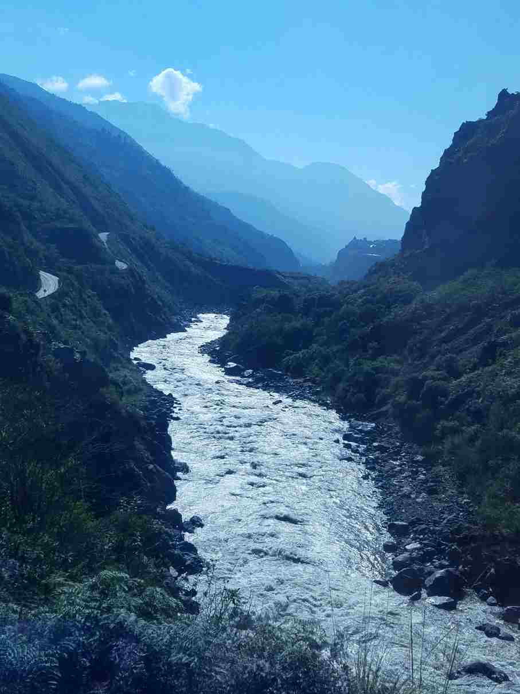
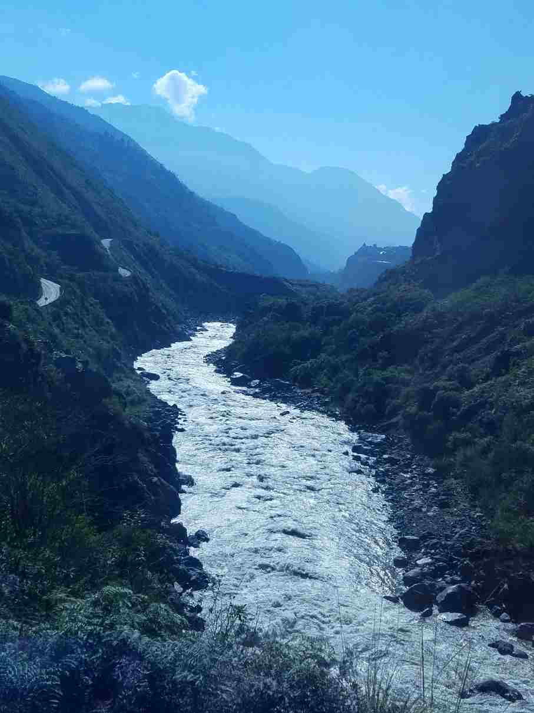

Welcome to Old Joe Rafting Co
Experience the surounding beauty of nature as you navigate through the rapids. Our guided tours offer an unforgettable adventure for both beginners and experienced rafters. Plan a trip with us today!
History
Back in 1572, Grandpa Joe took his wooden canoe down a white water rapid, he later found himself in the ocean stranded. Then multipule years of living off of fish, birds, and rain. He hit land, he was the secret first imagrant to the Americas. He then taught all of the natives about river rafting, but unfortunatly he died in a rafting accident going down what is now known as Niagra Falls. But the natives then taught the pilgrams about rafting and then the Old Joe Rafting Co was formed.
Adventure Awaits You!
 
